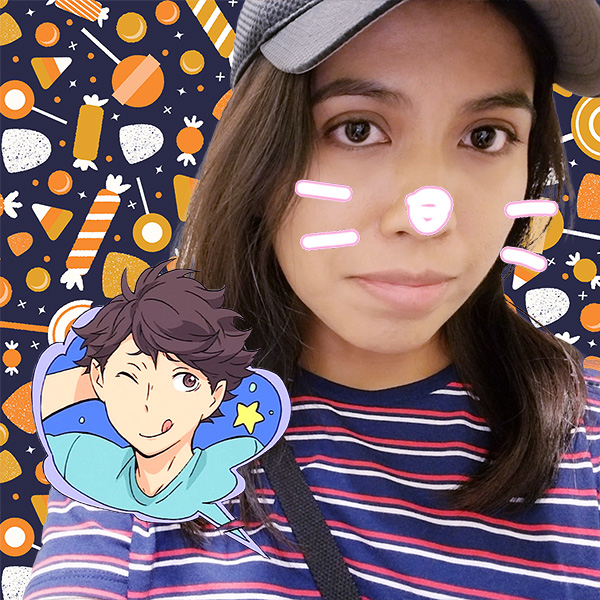
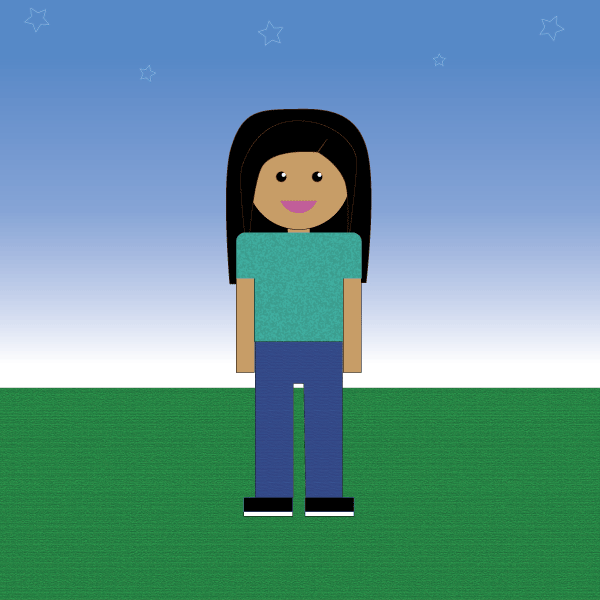
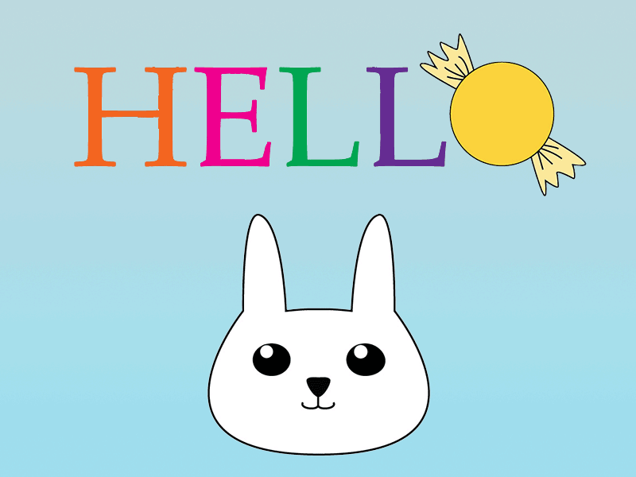

A photo of me with few of my favorite things, I chose a image of me, a character called Oikawa Tooru from "Haiykyuu," animal whiskers, and a halloween candy background to the few things that represent me. I love anime and Oikawa is one of my favorite character from "Haikyuu." Also I really like animals, all type of sweets, and Halloween is my favorite holiday.
I used a lot of shapes and effects. The background color I chose was more of a getting-night color, like when the sunset is over and you get to see a bit of the stars. This represents be, in a way, because I personally like it at that hour more than a sunset view. I also like to wear more bold and dark colors than pastels. The most challenging part was starting off because I really didn't know what to draw, but when I let the creative flow, it was nice and fun.
This audio sample is the sound of me interacting with my pet budgie, singing happily on a peaceful morning. When it comes to beautiful sounds, I think of my budgie (Maxwell) singing, and I decided to use calm and happy music in the background. This audio assignment consists of four audio samples. Although I had to duplicate one audio clip of my budgie toy shaking because the original audio was a bit short. I also fainted out the music towards the end when he finished singing.
What makes the animation funny is that everything appears innocent and cute until the candy falls down and spells out a different word. As I was thinking of what to do, I was thinking about using a rabbit but didn't know what to do with it at first, and I then thought of adding it to my website homepage as a greeting. I did everything in Illustrator and animated the rest in Photoshop.
Website link here.
.